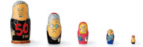

清风乐寂是一个设计的智囊团。
在客户的要求下提供各种设计。
既有健全的正统派设计事务所的功能，同时也同样重视对社会和世界的观察，
发现新的问题，并对设计项目的各种可能性进行提案。
媒体的环境改变了，交流的方式以及设计的含义或者作用都在发生着重大的改变。
我们希望可以尽可能地并列分析所有的媒体及领域。将美术、印刷设计、建筑、成品、
Web、书籍、展览会、酒店设计、城市系统、导航设计等，
在与外部的才能与技术进行紧密合作的前提下都纳入我们的视野，
并以可靠的水准将其进行具体化。
看到这个网页，如果能感觉到任何可能性的话，都请您不要犹豫，马上点击。
我们希望可以和任何的组织或者项目都建立起关联性。
现在加上我在内，有20多名员工在进行运作，
而促进我们在一起工作的是我们共同的梦想！
原デザイン研究所はデザインシンクタンクです。
依頼されてデザインを提供する
オーソドックスなデザイン事務所の機能は健全に保ちますが、
社会と世界を観察し、新しい問題を発見し、
デザインプロジェクトの可能性として提案していくことを
同じ比重でやりたいと考えています。
メディアの環境も変わり、コミュニケーションの方法も、
デザインという営みの意味や役割も大きく変わっていきます。
可能なかぎり、あらゆるメディアや分野を並列で咀嚼し、
グラフィックデザインも、建築も、プロダクツも、
webも書籍も、展覧会もホテルプロデュースも
都市システムやナビゲーション・デザインも
外部の才能や技術との緻密な連携をも視野にいれつつ、
しっかりとした水準で具体化してきたいと考えています。
このサイトを見て可能性をお感じいただけたなら、
躊躇なくコンタクトしてください。
どんな組織やプロジェクトとも繋がってみたいと思います。
現在は自分を含め20名のスタッフで運営していますが、
ヴィジョンを共有することから仕事を始めています。
